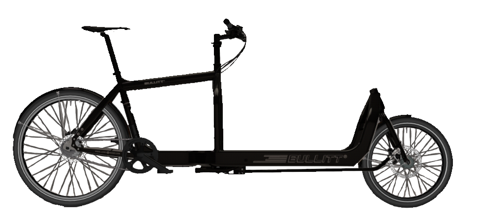
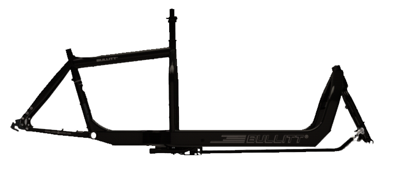
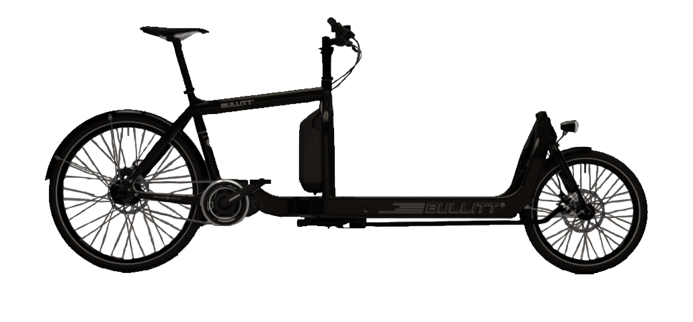

<body>
    <form [formGroup]="form" (ngSubmit)="submit()">
        <div class="form-group">
            <div class='wrapper'>
                <button id="previousButton"  class="btn btn-primary" value="Previous" type="submit" (click)="back()">
                            <span class="glyphicon glyphicon-chevron-left"></span>
                </button>
                <button id="nextButton" id="nextButton" class="btn btn-primary" value="Next" type="submit">
                        <span class="glyphicon glyphicon-chevron-right"></span>
                </button>
                <h1> Step 1 - Choose Your Bike</h1>
                <div class="container">
                    <div class='col-sm-4 ' >
                    
                    <div class='radio'>
                        <label><input type='radio'  name='frame' value="1438"
                                [checked]="idx === 0" 
                                [value]="bike.frame" 
                                (change)="onSelectionChange('Full Bike', '1438')">
                            Fullbike</label> 
                    </div>
                        Full Bike
                        If you are buying a Full bike, everything to ride safely and securely is included;
                        reflectors complying with EU regulations, front and rear mudguards to keep that gritty spray away and an Abus, 
                        insurance approved ring lock.
                    </div>

                    <div class='col-sm-4'>
                    

                    <div class='radio'>
                        <label><input type='radio' name='frame' value="1438"
                                [checked]="idx === 0" 
                                [value]="bike.frame" 
                                (change)="onSelectionChange('Framekit', '1438')">
                            Framekit</label> 
                    </div> 
                        Framekit
                        If you have bought a Bullitt frame, here's what to expect; An aluminium frame, 
                        chromoly steel fork, steering rod and fittings, FSA 1 1/8 headsets, tapered headset 
                        and spacers and a sturdy kickstand. We also include our newly developed, interchangeable dropouts. 
                        Please specify whether you require dropouts for internal or external gears, 
                        or horizontal singlespeed dropouts with your order.
                    </div>

                    <div class='col-sm-4'>
                    
                    <div class='radio'>
                        <label><input type='radio' name='frame' value="3642"
                                [checked]="idx === 0" 
                                [value]="bike.frame" 
                                (change)="onSelectionChange('ebullitt', '3642')">
                                Steps EBullit Full Bike</label> 
                    </div>
                    The STePS eBullitt system includes a 250W, 36-volt electric drive unit, or motor, that will help get you up to speed, 
                    but cuts out at 15.5mph (25km/h). You can go faster than that if you want but any speeds over 15.5mph have to be 
                    generated by either pedalling or gravity alone. The drive unit produces a maximum torque of 50nm and weighs 3.2kg, 
                    making it one of the lightest on the market.
                    </div> 
                </div>
            </div>
        </div>
    </form>
</body>